Click it, and it opens into a toolbox
Each tool starts from the island in a drop or a click. Everything stays on your computer as plain files.
-
Files
Drop files on the island. Convert images, audio, video and documents, zip and unzip, and merge, split or rotate PDF pages.
MacWindows
-
Notes
A Markdown vault with links, tags, daily notes and quick capture. Point it at an Obsidian vault and it just works.
MacWindows
-
Chat
Type or talk to Claude Code, Codex, Gemini, OpenCode, Ollama or your own API keys (voice mode on Mac). When one runs out of usage, the next takes over.
MacWindows
-
Music
See and control what's playing in Spotify, Apple Music, YouTube Music and the rest. The buddy dances when a song starts.
MacWindows
-
Capture
Screenshots with markup and screen recordings with click zooms on Mac; Snipping Tool and full-screen grabs on Windows.
MacWindows
-
Clipper
Save the page you're reading, or a YouTube video with its transcript, as a clean note.
MacWindows soon
-
Transcribe
Live captions and transcripts of audio and video files, made on your device.
MacWindows soon
-
Writing check
After you pause typing, in any app, the buddy reads along with a magnifying glass and offers fixes. Powered by Harper, on your device.
MacWindows soon
-
Cleaner
Tidy the desktop, clear caches and old downloads, remove apps with their leftovers, and lock the keyboard while you wipe it.
MacWindows soon
Make it yours
Thirteen looks to start from, then any color, nine materials, eight kinds of eyes, a mouth if you want one, and a name. These are the real thing, drawn by the app.
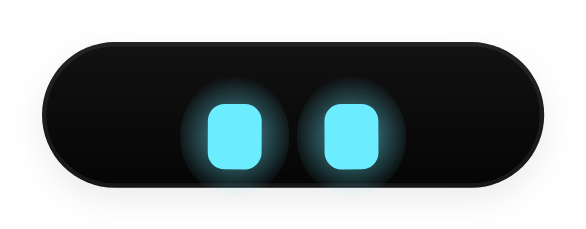
DynaMidnight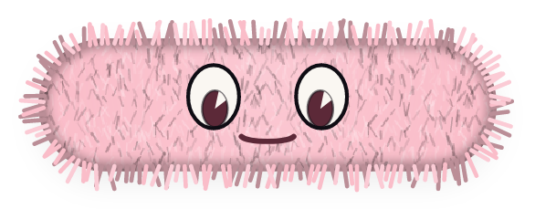
MochiPlush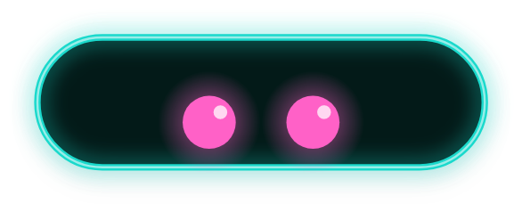
NovaNeon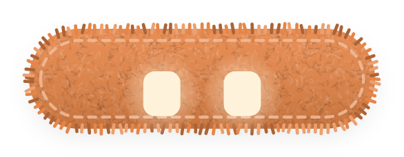
BiscuitFelt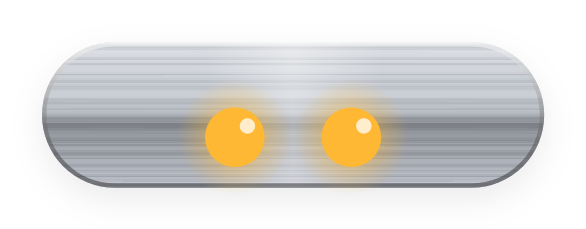
JunoBrushed metal- KiwiJelly
- EchoHolographic
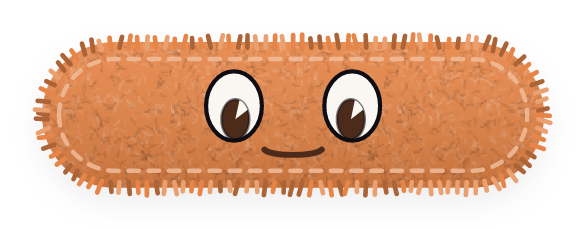
ToffeeFelt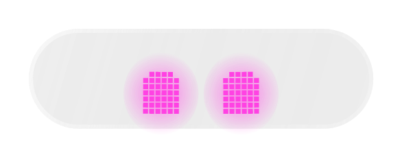
PipLiquid glass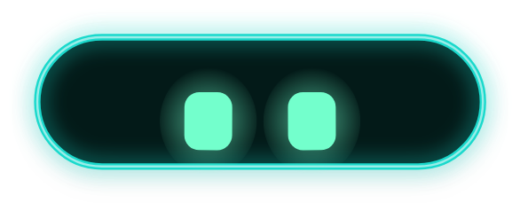
MintNeon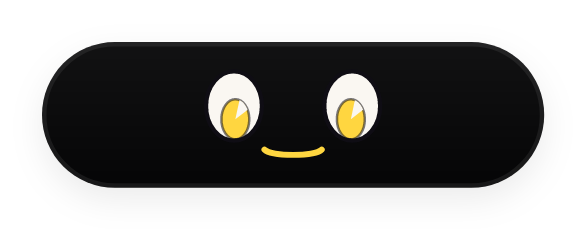
ZiggyMidnight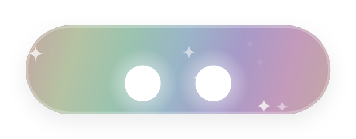
PearlHolographic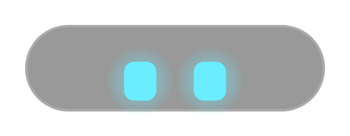
FrostFrosted
Opening it the first time
DynaBuddy is free and made without paid developer certificates, so your computer asks once whether you trust it. After that it opens like any app and updates itself.
Mac
- Open DynaBuddy-mac.dmg and drag DynaBuddy into Applications.
- Double-click DynaBuddy in Applications. macOS says it can't check it; click Done.
- Open System Settings → Privacy & Security, scroll down and click Open Anyway next to DynaBuddy.
- Click Open Anyway again and enter your password. A short setup starts.
It lives in the menu bar (the eyes icon) with no Dock icon.
Windows Beta
- Run DynaBuddy-win-Setup.exe.
- If Windows shows "Windows protected your PC", click More info, then Run anyway.
- Setup installs it for you (no admin needed) and opens it. A short setup starts.
It lives in the tray (bottom right). Right-click the island or the tray icon for Settings.
The Windows version is a beta and still being worked on: some tools are Mac-only for now and you may hit rough edges. It updates itself as it gets better.
What's new
Installed copies check this site once a day and update themselves. Every update is checked against DynaBuddy's own signing key before it installs.